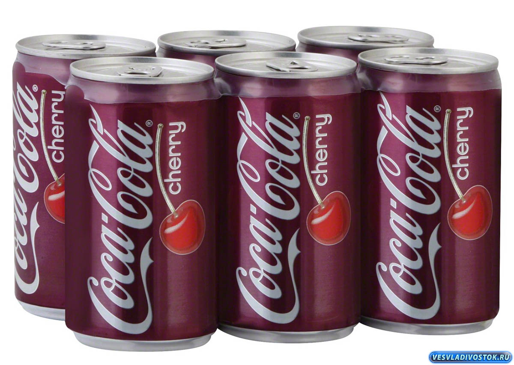

Coca-Cola Cherry (первоначально продававшаяся как и до сих пор широко называемая Cherry Coke)-это вишневая версия Coca-Cola.Задолго до ее официального появления в магазинах в 1985 году многие закусочные и аптечные газированные фонтаны распространяли неофициальную версию, добавляя вишневый сироп в Coca-Cola.[1] Компания Coca-Cola впервые начала тестировать свою официальную вишневую версию Coca-Cola вместе с другими ароматизаторами на аудиториях, посещающих чемпионат мира 1982 года.Ярмарка в Ноксвилле, штат Теннесси.[2][3] Затем Cherry Coke вошла в основное производство в США летом 1985 года.[4] Cherry Coke, которая к 2007 году была переименована в Coca-Cola Cherry в США и некоторых других странах, была третьей вариацией Coca-Cola вв то время это была обычная кока – кола и диетическая кола, а также первая ароматизированная кока-кола.[5] Она была выпущена на национальном уровне примерно в то же время, что и спорная переформулировка Coca – Cola, и получила значительную долю рынка, когда этот продукт был широко прекращен в начале 1990-х годов. Диетическая вишневая кока-кола была введена в 1986 году и переименована в "Диетическую вишневую колу" в 2005 году и снова в "Диетическую злющую вишню" в 2018 году.